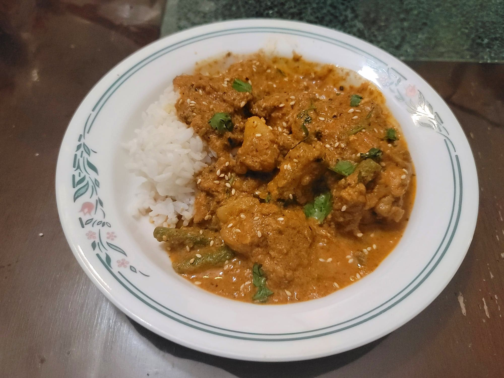

Pepián

Ingredients:
Pepián:
- 4-5 lb Chicken, Whole chicken cut into 8 pieces, or Chicken thighs
- 5 cups Water
- 1 1/2 tsp Salt
- 1/2 cup Sesame seeds + plus more for garnish
- 1/2 cup Shelled pumpkin seeds (Pepitas)
- 1/2 stick Cinnamon
- 2 Corn tortillas
- 5 Roma tomatoes, stem removed
- 1 White onion, peeled and ends removed, optionally halved
- 1 Dried pasilla chili, stemmed and deseeded
- 1 Dried guajillo chili, stemmed and deseeded
- 1/4 tsp Ground achiote
- 1/2 tsp Salt
- 1/2 bunch Cilantro + more for garnish
Optional Vegetables:
- 2 medium/small Potatoes, peeled and chopped
- 2 Chayote, peeled and chopped
- ~12 oz Green beans, ends trimmed and cut into 2" pieces
Intructions:
- Place the chicken into a large pot with the water and salt. Bring to a boil and then reduce to a simmer. Cook, covered, for at least 30 minutes or until tender. Skim off and discard any scum that forms while cooking.
- Remove the chicken from the broth and reserve. If using vegetables, add them to the simmering broth and cook for about 15 minutes, covered, or until tender. Then strain the the vegetables from the broth and reserve the vegetables along with at least 4 cups of the broth.
- While the chicken and vegetables cook, add the sesame seeds, pepitas, and cinnamon stick to a dry pan over medium heat. Dry roast until lightly golden and the pepitas are popping. Then reserve and let cool. Once cool, transfer to a spice grinder and grind until it becomes a fine powder.
- In the same pan, toast the two corn tortillas and the two chilies. Then reserve.
- Add the tomatoes and onion to the pan. Dry roast until charred all around.
- Add the tomatoes, onion, and two chilies to a food processor. Process until very smooth. Then add in the ground seeds and cinnamon, salt, achiote, and cilantro. Process until smooth. Add in the tortillas turn on the processor. As it blends with the tortillas, slowly add in the 4 cups of chicken broth. Process until very smooth.
- Pour the sauce into a very large pot and bring to a boil before reducing to a simmer. Add in the chicken and let simmer, uncovered for 15 minutes or until thickened to preference.
- Taste and add salt as needed. If using vegetables, stir them in now. Remove from heat and optionally stir in some more toasted sesame seeds and cilantro. Serve hot over rice.